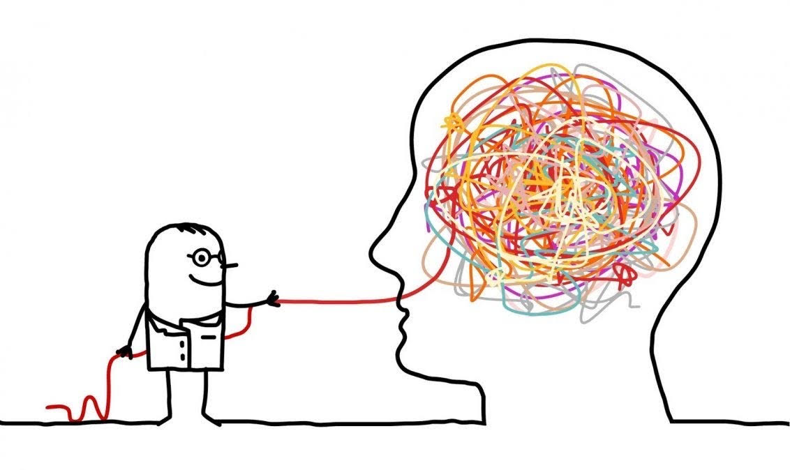
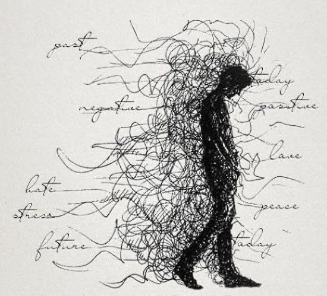
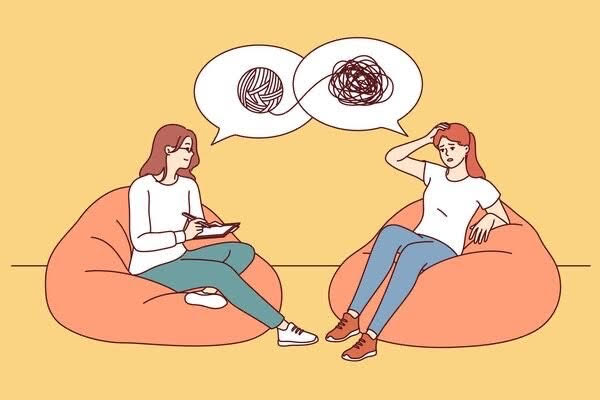
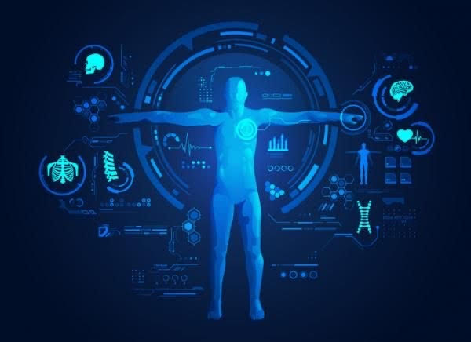
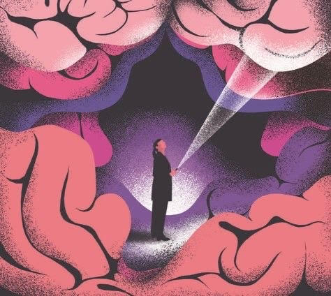

¿Qué es Bioneuroemoción y Biodescodificación?
La respuesta es sencilla: La biodescodificación es una alternativa de la medicina que busca encontrar un origen metafísico de cada enfermedad, o su significado emocional, para buscar a partir de allí la forma de sanar enfermedades. La Bioneuroemoción es un enfoque pseudocientífico que sostiene que emociones y patrones de generaciones pasadas estan interconectadas con nosotros, por esta razón se siguen repitiendo de generación en generenación y por lo tanto crean conflictos emocionales no resueltos que causan enfermedades. Porque se tiene la creencia de que lo que empieza en un pensamiento se transforma en una emoción y de la emoción brinca a nuestro estado de ser y despues a nuestras acciones y por ultimo a nuestros resultados en la vida (nuestras enfermedades o síntomas). Nuestros pensamientos están condicionados a nuestras creencias y percepción.

¿La descodificación culpabiliza a las personas por sus enfermedades?
En la descodificación no se buscan culpables. Ni afuera (no existe el factor externo solo el reflejo de nosotros, ya que somos una conciencia de unidad), ni a la persona (que ha hecho lo que ha podido con la historia de su vida) No somos responsables de tener una enfermedad, pero si somos responsables de lo que hacemos con ella y como la mejoramos.

¿Se pueden descodificar a niños y adolecentes?
Las sesiones de bioneuroemocion se adaptan segun la edad de los niños que asisten a la consulta de descodificacion.
¿Niños y niñas de 0 a 3 años?
Se trabaja principalmente con las madres y los padres.
¿Niños y niñas de 3 a 6 años?
Se introducen herramientas como el dibujo y el cuento, y aunque los padres siguen presentes, el niño tiene un papel mas activo en la terapia.
¿Entre los 6 y 12 años?
Se utilizan herramientas creativas como el dibujo, cuentos, diario personal, plastilina y otros elementos creativos. Los padres todavia estan presentes, pero su participación es más puntual y enfocada.
¿A partir de los 12 años?
Los niños asisten a la consulta sin la presencia de los padres, a menos que sea necesario para un caso en particular. En esta etapa, los adolecentes tienen un mayor grado de automomía en su proceso de terapia
En este video encontraras mas información
https://youtu.be/HErVBLzPIYo?si=KcqLNt20sfzznKjh¿Como descodificar las enfermedades a traves de las emociones?
Para que puedas entender como funciona la descodificación te vamos a enlistar los pasos que son importantes para cualquier sintoma.
Paso 1
Tenemos que haber pasado un evento traumatico o que provoque un alto estres. En consecuencia, el cuerpo aumenta el cortisol y el cerebro busca la manera de salir del "peligro" y despues tendremos que descodificar los conflictos que le provocan el síntoma.
Paso 2
Aparece el síntoma según cómo hayamos vivido el estrés. Cuanto más intenso y duradero haya sido el estrés, más grave será el síntoma. Se realizara una indagación profunda sobre su familia de sangre, como fue su vida, su biografía, sus heridas emocionales y preguntas como ¿Cuál fue mi juicio?, ¿Cual fue mi percepción?, ¿Donde estaba o que estaba pensado cuando empezó a doler? Investigar que significa el sintoma o la enfermedad.

Paso 3
Una vez descodificado el conflicto que desencadenó el sintoma, se proporcionan herramientas para enfrentar conflictos de manera efectiva, mejorando así la calidad de vida. Se integran recursos internos (habilidades internas que nos ayudan a superar situaciónes dolorosas) para afrontar otras situaciónes que puedan llegar a generar un shock doloroso en el futuro y que les permita solucionar en conflicto de una manera mas acertiva y conciente.

¿La descodificación reemplaza la medicina tradicional cientifica?
La biodescodificación no reemplaza a otro tipo de terapias o tratamientos, sino más bien los puede complementar. En este sentido, la sanación verdadera viene a partir de la comunión plena entre el cuerpo y el alma. Según Christian Flèche, psicoterapeuta especialista en la teoría de biodescodificación biológica: "Cada órgano dañado responde a un sentimiento". Además, también, también explica en su página web: "Las enfermedades son una metáfora de las necesidades físicas y emocionales de nuestro cuerpo. Cuando no hay una solución exterior a esa necesidad, hay una solución interior".
